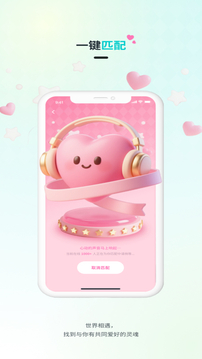
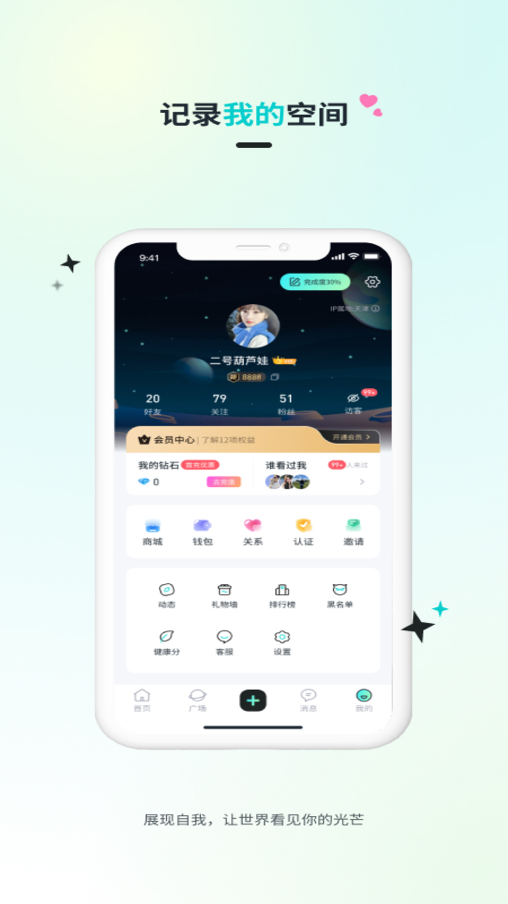

Qiz 到底值不值得掏钱？一个付费用户的账本
把 Qiz 的免费版和付费版掰开算一遍——轻度用、主力用、重度用分别值不值，替代方案有什么代价。
开头：它到底值不值得掏钱？
我用 Qiz 三个多月了。一开始是朋友推给我的，后来去Qiz官网翻了一下才确认——这玩意儿和探探那种"看脸划"的不一样，主打兴趣匹配。抱着试试的心态从下载拿了安装包，手机号验证码注册，选了一堆标签——二次元、MBTI、独立游戏、小众音乐、猫、咖啡、徒步、阅读……硬是凑了 15 个，才够系统启动匹配。
体验下来确实有区别。快速滑动匹配的时候，卡片上不是只摆一张大头照，头像旁边密密麻麻挂着标签，一眼就能扫出兴趣交集有几个。标签重叠三个以上的，右滑命中率明显高。但用了一个月左右，我开始琢磨：这玩意儿有没有必要开付费？
定价拆解：免费版给什么，付费版多什么
先说我摸清楚的情况——Qiz 的付费体系信息不如探探透明，去Qiz文档翻了一下，官方没写死价格档位，只能从实际使用体验和社区传闻里反推。
免费版的边界大致是这样的：
- 三种匹配模式（快速滑动、语音匹配、同城匹配）都能用，但每次滑动有次数上限，不是完全无限制
- 兴趣广场的图文、短视频、语音帖子都能发、能看、能评论，没有功能锁
- 聊天匹配成功后对话正常，没有消息条数限制
- 标签选择上限 20 个，这个免费版和付费版一样
付费版多出来的东西：
- 滑动次数解锁或翻倍，具体倍率社区里说法不一，有人说翻倍有人说三倍
- 匹配效率提升——据说付费用户的卡片会被推给更多同好，标签匹配精度算法加权
- 可能有"谁喜欢了我"之类的后台数据查看功能，免费版只能看到匹配成功的
- 一些高级筛选选项，比如按标签交集数量、按活跃时间过滤推荐列表
价格方面，我没找到官方公布的数字。社区里流传的说法是月付、季付、年付三档，年付折算下来月均最低，但单月价格不算便宜——大概在二线城市一杯精品咖啡的价位。这个价位算不算贵，要看你怎么用。
算账：三类人分别值不值
轻度用：偶尔刷一刷，一周打开两三次
这类人占用户群的大多数。忙起来可能一两周不打开，闲的时候睡前刷十分钟。
对你们来说，免费版完全够。快速滑动每天次数够你花十分钟滑一轮，匹配到了就聊，没匹配到也不急。兴趣广场刷一刷动态，发两三条图文，不需要任何付费功能。
哪怕偶尔觉得"今天次数用完了"，歇一天再打开就行。社交 app 本来就不是刚需，为了多滑几十次掏月费，相当于花咖啡钱买半小时额外滑动时间——换算下来每分钟成本快赶上网咖了。
结论：永远不用付。
主力用：每天打开，认真在上面找同好
这类人一周打开三四天，每天至少半小时。标签选得精准（15 个以上），真的在主动经营自己的兴趣圈子——发动态、评论别人、参与话题。
你们是 Qiz 付费版的核心目标用户。原因有两个：
第一，滑动次数是实打实的生产力。免费版每天滑完了就没了，但主力用户的标签选得准，滑一次命中概率比轻度用户高得多。付费解锁或翻倍后，每天能多接触几十张卡片，按 20% 的标签交集命中率算，每周多匹配四五个人，一个月下来是二十多个潜在同好——这个量级已经足够在某一两个兴趣圈里扎下根。
第二，匹配精度加权。免费版的推荐是按标签交集排的，但付费版据说会把你往"标签高度重合"的用户池里塞。如果你已经把自己的兴趣画像描绘得很清晰（核心标签 5 个以上），这个加权的价值会非常明显——推过来的人标签交集从 3 个变成 5 个、6 个，聊不起来的概率大幅降低。
算一笔时间账：假设你每天在 Qiz 上花 30 分钟，其中 15 分钟滑动、15 分钟聊天。付费版让你每天多滑 10 分钟的卡片，多花的那部分费用折算到每一天大概几毛钱——几毛钱换来每天多 10 分钟的精准社交接触，对于真的想找到同好的人来说，这笔账很划算。
结论：闭眼付。
重度用：每天刷一两个小时，把它当主阵地
这类人要么是真的在上面找到了归属感，要么就是社交需求特别旺盛。每天刷一两个小时，发三四条动态，聊十几轮匹配。
对你们来说，付费版的价值会递减。因为当你每天已经能接触几百张卡片、几十次匹配的时候，再多解锁几十张卡片的边际收益就不高了。反而更该关注的是标签组合的优化、简介的打磨——这些免费版就能调整的东西，对付费版用户和免费版用户同样有效。
结论：可以等等，先把免费版的玩法摸透再考虑。
替代方案：不付钱有什么别的路
同类免费工具
探探、Soul 都能免费刷，探探的核心功能免费版基本够用，Soul 的兴趣匹配逻辑和 Qiz 有点像。但问题在于——探探的算法核心是地理位置和颜值，标签只是补充；Soul 的兴趣广场更重内容社区，匹配效率不如 Qiz 专注。换过去等于换了一套玩法，不是无缝替代。
降低使用频率
不付费就少刷。一周刷一两次，每次刷到次数用完就停。对于轻度用户这根本不是问题，对于主力用户可能需要考验一下自制力。但社交这事儿急不来，慢一点反而能更认真地看每一张卡片。
把兴趣广场当主阵地
不用滑动匹配，专攻图文和短视频动态。发高质量的兴趣相关内容，让同好来找你。这条路免费，但投入的时间成本更高，而且转化率取决于你的内容质量。
最终结论：对号入座三秒钟
- 轻度用（每周两三次、每次 10 分钟内）：永远不用付。免费版的量完全够。
- 主力用（每天半小时以上、认真找同好）：闭眼付。滑动次数 + 匹配精度加权，这笔钱是性价比最高的社交投入。
- 重度用（每天 1 小时以上）：先等等。把标签和简介磨到极致，边际收益够了再考虑。
- 完全不碰社交的：不用装。
对我自己来说，用了三个月之后我最终没付费。原因很简单——我属于主力用和重度用之间的过渡地带，标签选了 15 个，每天打开半小时左右，免费版的量刚好够我花完那半小时。我把省下来的月费拿去换了一杯精酿，聊得来的同好也找到了几个，目前还没觉得有必须升级的刚需。
但如果你真的在上面投入了时间、真的在找某个小众兴趣圈的同好——这钱花得挺值。


资料同步说明
Qiz 的功能细节和社区氛围相关资料，我在 GitHub、Gitee、GitCode 三个仓库都维护了一份镜像，方便国内朋友按需取用：GitHub、Gitee、GitCode。